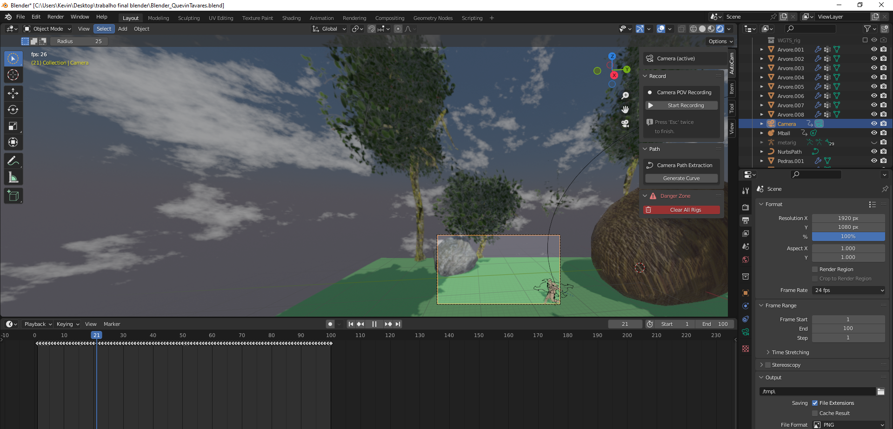
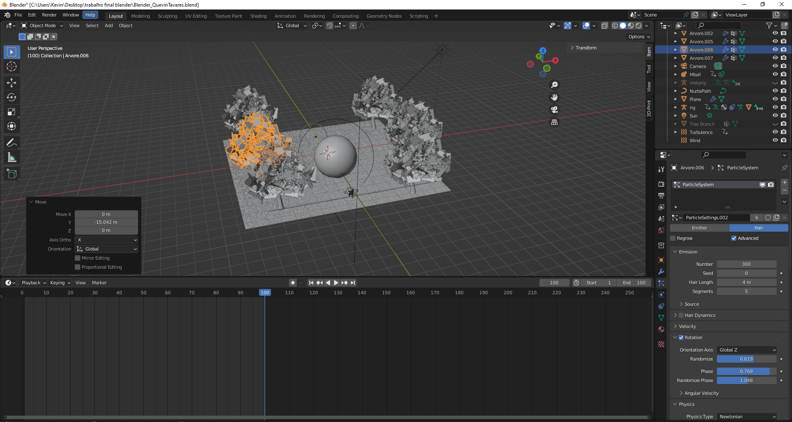
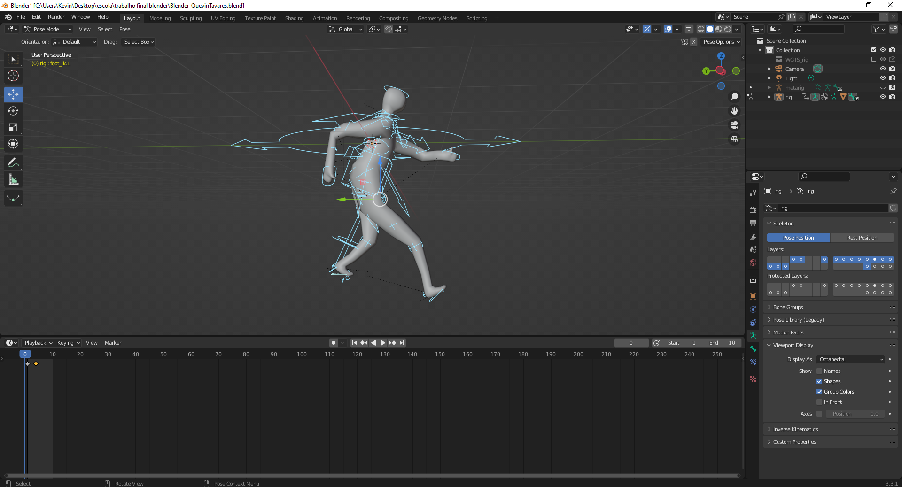

Sobre o projeto
O trabalho reúne as principais etapas de uma produção 3D: criação do cenário, modelação de objetos, materiais e texturas, rigging e animação de personagem, composição de câmara e preparação do resultado final.
Projeto final de modelação e animação 3D, com cenário natural, personagem animada, materiais, câmara, efeitos ambientais e som.

O trabalho reúne as principais etapas de uma produção 3D: criação do cenário, modelação de objetos, materiais e texturas, rigging e animação de personagem, composição de câmara e preparação do resultado final.
O projeto permitiu praticar a construção de uma cena coerente, a configuração de materiais, o controlo de um rig, o ritmo da animação e a coordenação entre câmara, ambiente e áudio.
Vídeo final da animação, combinando os dois momentos desenvolvidos no projeto.

